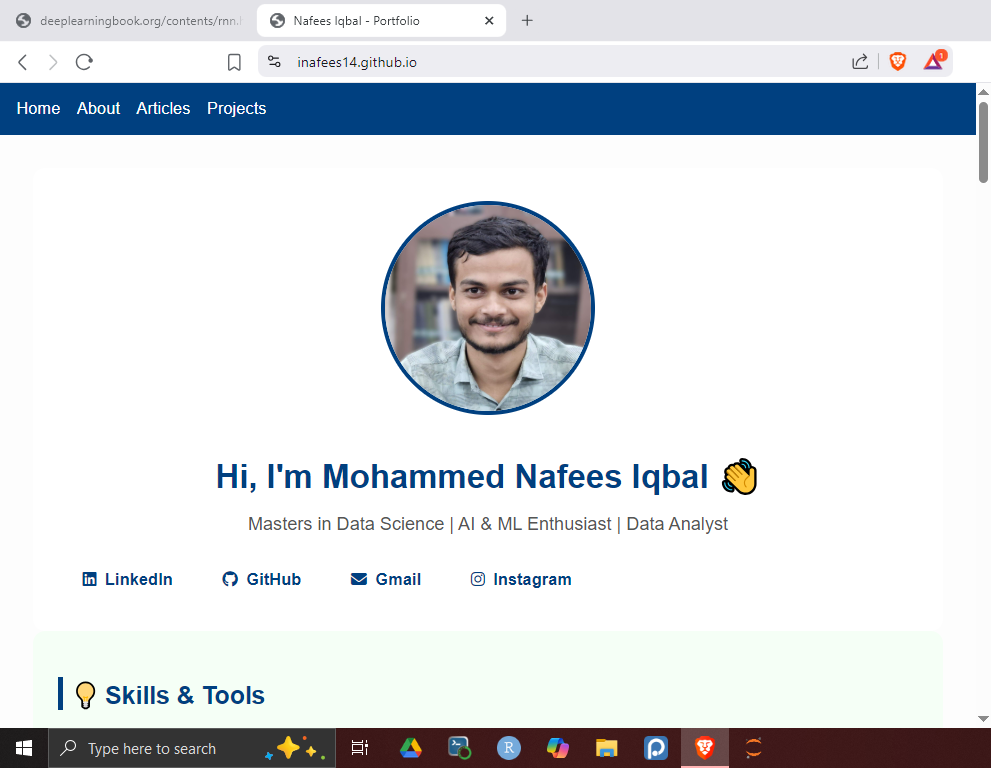
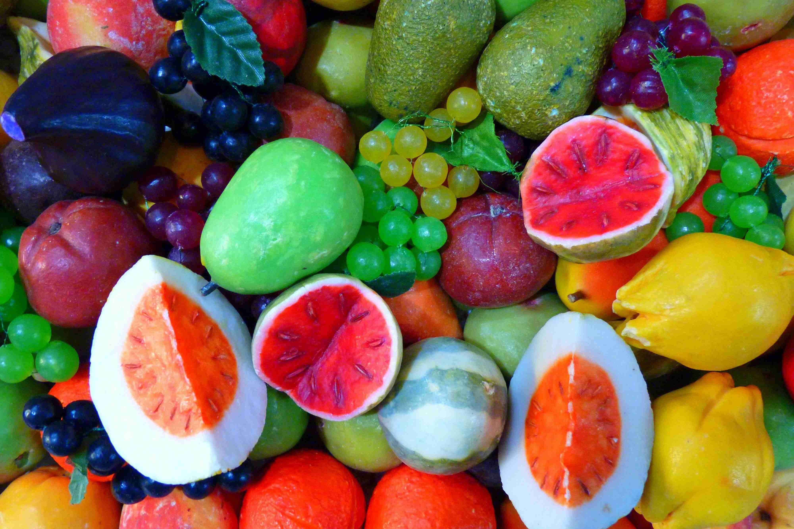

ü߆ Post Title Here
By Mohammed Nafees Iqbal | Published on November 7, 2025
This is your introductory paragraph. You can talk about the topic, why it’s important, and what the reader will learn.
1️⃣ Subheading Example
Here you can explain concepts or write your guide.
You can also include inline code like Python or highlight snippets.
# Example: CNN Model Summary
from tensorflow.keras import layers, models
model = models.Sequential([
layers.Conv2D(32, (3,3), activation='relu', input_shape=(64,64,3)),
layers.MaxPooling2D(2,2),
layers.Flatten(),
layers.Dense(128, activation='relu'),
layers.Dense(11, activation='softmax')
])
model.summary()
2️⃣ Insights & Results
Share findings, visuals, or analytical insights here. You can embed images like below:
Wrap up your article with key takeaways or a reflection. You can also link to related projects or external references.